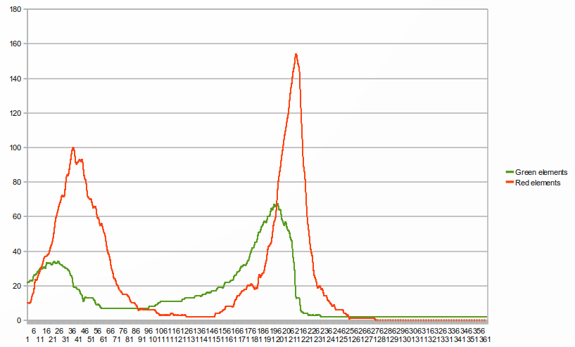

Quand on laisse une population d'êtres-verts évoluer sans prédateurs, avec juste de l'eau, on a déjà un modèle proies-prédateurs similaire au modèle de Lotka-Volterra à ceci près que la composante positive de la dérivée quantité d'eau est constante.
L'équation d'évolution d'un système avec des êtres-verts qui se reproduisent et de l'eau s'écrit :
dw/dt=alpha-beta*g
dg/dt=-g*(deta-gamma*w)
Où :
En réalité l'équation est un peu plus complexe car la vitesse de reproduction ne dépend pas directement de la quantité d'eau, mais dépend par contre du nombre d'êtres-verts au carré.
Cependant, en laissant ce modèle évoluer, on obtient des oscillations semblables à celles du modèle Lotka-Volterra :

Avec trois espèces, il est difficile voire impossible d'obtenir un équilibre. Voici les courbes de l'évolution du nombre d'êtres-verts et d'êtres-rouges au cours du temps durant une simulation avec des êtres-verts, des êtres-rouges et de l'eau (quantité d'eau non représentée) :
